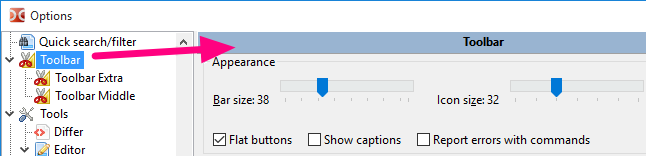
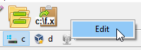
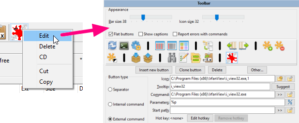
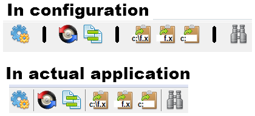
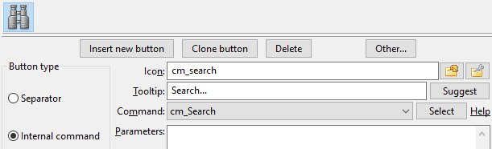
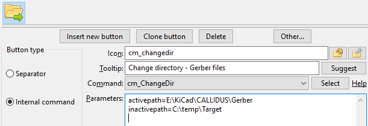
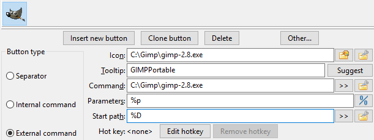
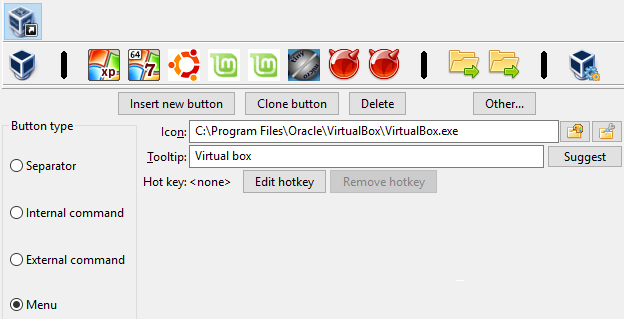
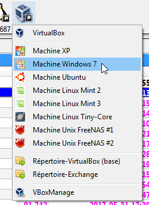
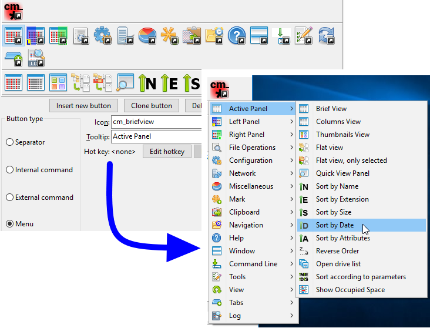

当我们频繁使用双面板文件管理器如 Double Commander 时，最终会发现直接从管理器启动我们正在使用的应用程序比去桌面、任务栏或开始菜单寻找快捷方式更为方便。
这对于我们经常做的任务尤其如此。
工具栏的想法是让每个人可以自定义工具栏内的按钮，以便执行我们需要经常进行的功能。
Double Commander还建议使用基于当前显示/选择文件的众多可能参数，以便将它们作为参数传递给要启动的应用程序。
以下是默认安装后在文件面板上方显示的 DC 默认工具栏。但不用担心：您可以根据自己的需求和喜好配置它。
这里是一个可能出现在工具栏中的内容表
| 工具栏内可能的元素 | |
|---|---|
| 元素 | 描述 |
| 垂直栏帮助我们将相似的功能和/或相似的上下文分组在一起。 | |
| 调用Double Commander中的内部命令。 | |
| 启动外部应用程序、可执行文件、脚本等。 | |
| 配置将从主工具栏显示为下拉菜单的其他工具栏元素。 | |
要配置我们工具栏中将出现的内容，我们需要进行配置。
我们可以去Double Commander的主要配置，向下滚动左侧栏并选择“工具栏”，我们就可以访问它。

另一种快速访问配置的方法是直接在工具栏的空白区域右键单击，然后选择编辑。

随着我们逐渐熟悉工具栏，我们可能会直接右键单击工具栏上的一个按钮，这样不仅可以打开工具栏编辑器，还可以立即准备编辑我们右键单击的工具栏按钮的相关操作。

此外，上下文菜单允许删除选定的按钮、剪切或复制到剪贴板，或从剪贴板插入一个按钮。
我们还可以在不打开设置窗口的情况下更改工具栏元素的顺序：Double Commander支持在按住 Shift 键的同时用鼠标拖动按钮。
分隔符只是一个垂直条，可以用来将一组按钮分开，以便将具有相似相关操作的按钮分组在一起。
没有真正的活跃功能，它只是为了好看而装饰。
在以下示例中，个人使用分隔符将与比较相关的功能隔离在一起，然后是与剪贴板相关的功能，等等。

内部命令与 Double Commander 直接执行的操作相关，无需调用外部应用程序。
命令种类繁多。请参见此页面，该页面专门描述所有内部命令。
例如，如果我们想要一个工具栏按钮来启动搜索，我们只需从命令的下拉框中选择 cm_Search 命令。
如我们在下面的图像中所见，我们可以为其选择一个自定义图标，但通常只需从命令的下拉框中选择命令即可，命令已经有一个内部关联的图标。
工具提示的作用是让我们写一些容易记住的小词，以便在鼠标悬停时提醒我们按钮的任务。
这里是一个包含cm_Search命令的示例：

某些内部命令可能接受参数以配置其操作。当需要这样做时，我们只需在参数框中写入参数：大多数参数必须以 parameter=value 的形式添加（除非另有说明），不带引号，并且每个参数单独一行。
在以下示例中，我们使用内部命令 cm_ChangeDir，并提供两个参数以指示要加载和显示在每个面板中的目录。

外部命令与需要调用外部程序的操作相关。
对于外部命令，我们可以设置更多选项，以便精确配置我们想要启动的命令、我们希望在哪个目录中启动它，以及如果需要，我们希望提供给命令的参数。
“命令”字段仅用于可执行文件（原样，不带引号）：我们可以指定文件名或带有完整路径的文件名，我们还可以使用环境变量。
关于参数，我们可以选择用户变量，这些变量将根据活动面板当前选定的文件等被替换为其实际值。请参见此链接下可用作参数的变量专用页面（请注意引号的使用）。要在终端中运行命令，我们可以使用变量%t0 和%t1。
在以下示例中，我们设置了一个工具栏按钮来启动应用程序 GIMP，%p 作为参数意味着当我们点击按钮启动 GIMP 时，当前活动面板中所选文件的完整文件名将作为参数传递，因为这就是 %p 的含义。

如果我们不需要明确指定工作目录，那么可以将“起始路径”字段留空，在这种情况下，工作目录将是活动文件面板的当前目录。
如果我们配置很多工具栏按钮，可能会没有足够的空间将所有按钮放在同一水平线上。
为了让我们添加更多按钮，我们可能会添加一种特殊的按钮类型，该按钮会在下方出现一个下拉菜单，以便我们访问类似于工具栏的按钮，但以下拉菜单的形式呈现。
请看下面的示例，我们添加了一个类型为“菜单”的按钮。
这将会在下面出现一个新的子工具栏，我们可以根据需要用指向不同任务的新工具栏按钮来填充它。
这个例子还告诉我们，将与同一项目、同一领域相关的按钮分组在一起可能会有所帮助。
在这个例子中，子工具栏具有与安装在虚拟机中的不同类型操作系统相关的功能。

以下是配置的子工具栏在应用程序中将如何显示：

配置成这种方式的子工具栏可能包含之前呈现的相同类型的按钮。
我们甚至可能在一个子工具栏内再有一个子工具栏，依此类推。
这将在应用程序中作为菜单元素的子菜单显示。
请看下面的示例：
